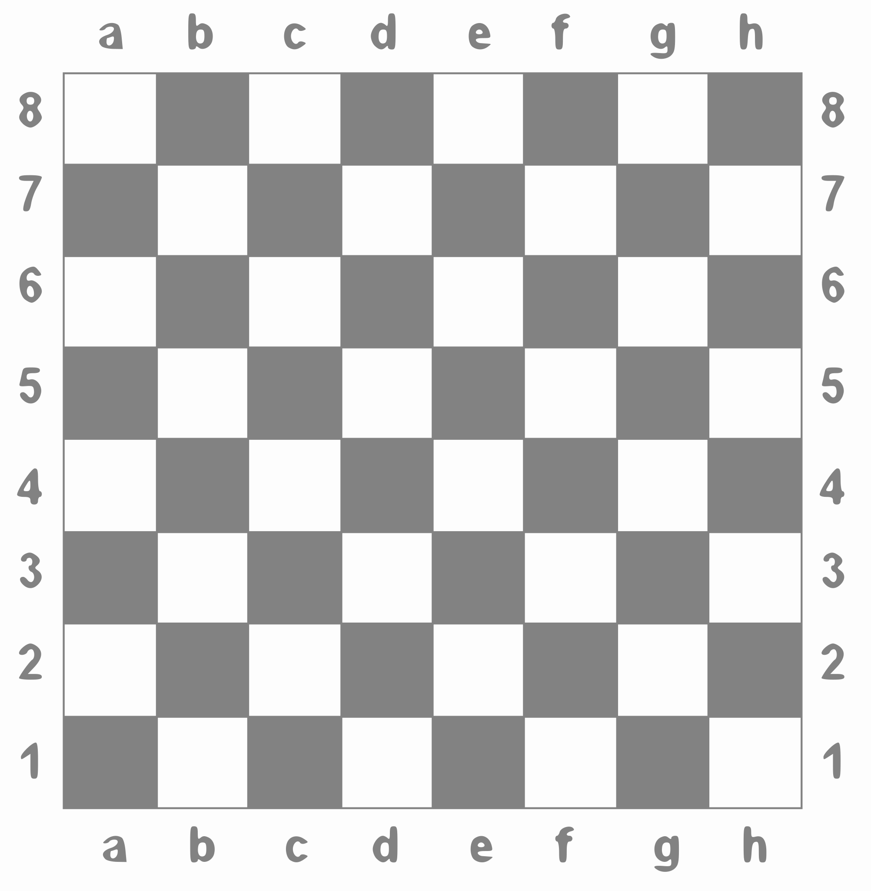

Aki két nyúl után fut, egyiket sem fogja meg.Tartakower úgy dicsérte ezt a művet, mint a kör négyszögesítését.
Nagy magyar sakkozóink

Réti Richárd
Richard Réti (Bazin, 1889. május 28. – Prága, 1929. június 6.) híres német anyanyelvű osztrák-magyar sakkmester, a monarchia felbomlása után csehszlovák sakknagymester volt, sakkfeladványszerző, sakk szakíró.
Apja zsidó orvos volt, egy francia nevelőnő foglalkozott vele. Iskolásként 1904-ben Bécsbe költözött az anyjával, ahol elvégezte a gimnáziumot és matematikát hallgatott az egyetemen, de hamarosan a sakk bűvölte el. Elvesztette a bécsi Café Centralban a szemináriumi dolgozatát, és, mert nem találta, hátat fordított az egyetemnek, és hivatásos sakkozó lett.
Tartakover mesélte később Réti matematikát hallgatott, de nem volt száraz matematikus, Bécs színeiben játszott, de nem volt bécsi, a régi Magyarországon született, de nem tudott magyarul, nagyon gyorsan beszélt, de megfontolva cselekedett, és a legjobb sakkozó lett, de nem harcolta ki a sakk-koronát. Ő, igenis egy kutató művész, aki inkább a dolgok „miértjével”, mint a dolgok lényegével foglalkozik…
Réti egyike volt a sakkmegnyitás radikális megújítóinak, Nimzowitsch-csal, és Breyer Gyulával együtt a „Hypermodern Sakkiskola” nevezetes vezéregyéniségeként. A nevét viselő Réti-megnyitás (1.Hf3 d5 2.c4) azonknak az időknek egyik jellegzetes vívmánya.
2018-ban a World Chess Hall of Fame (Sakkhírességek Csarnoka) tagjai közé választották.
A zsenialitása a végjátékfeladványok területén is mutatkozott. A leghíresebb műve 1921. december 4-én jelent meg az Ostrauer Morgenzeitung napilapban. Ez valószínűleg a legismertebb végjátékfeladvány, amit valaha szerkesztettek. A szerzemény alapgondolata a közismert senecai szólás tagadása:
